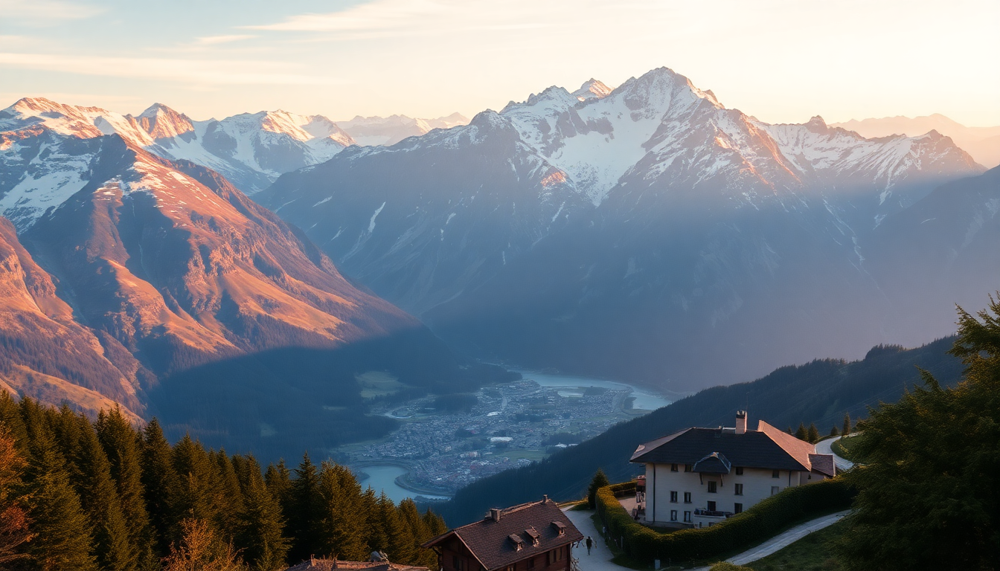

Swiss Alps: Ski vs Summer Hiking – Best Time to Visit

I’ve been to the Swiss Alps in both peak winter and high summer, and honestly, the “best” time depends entirely on what you want to do. Ski season runs roughly December through April, while summer hiking kicks in from June to September. This guide breaks down the trade-offs for five key towns—Zermatt, Interlaken, Grindelwald, Lauterbrunnen, and St. Moritz—so you can pick the season that fits your trip style, not someone else’s Instagram feed.
Should you visit the Swiss Alps in ski season or summer?
If you’re here to ski, winter is non-negotiable. But if you want to hike, summer wins. The real question is whether you’re okay with crowds, higher prices, and limited daylight in winter, or if you prefer longer days, wildflower meadows, and quieter trails in summer. I’ve done both, and here’s the honest breakdown: summer gives you more freedom of movement, but winter delivers that iconic alpine fairytale vibe.
- Ski season (Dec–Apr): Best for Zermatt and St. Moritz, where slopes stay reliable through April. Expect packed trains and premium hotel rates.
- Summer (Jun–Sep): Ideal for Interlaken and Grindelwald. Trails open by late June, and you can hike up to the Jungfraujoch without a parka.
What is the best time to visit Zermatt?
Zermatt is a year-round destination, but I’d pick late summer (August to early September) for hiking the Matterhorn Glacier Trail, or late winter (March) for skiing with fewer crowds. The town itself is car-free and feels like a postcard in both seasons, but the difference is in what you can actually do.
- Winter in Zermatt: Ski runs are open from November to May on the Klein Matterhorn. We stayed at Hotel Schweizerhof Zermatt—pricey but worth it for the Matterhorn views from the breakfast room.
- Summer in Zermatt: The 5-Seenweg (Five Lakes Trail) is a moderate 9-km hike with reflections of the Matterhorn in each lake. Go in July when the larch trees are green and the snow has melted off the lower trails.
- Affiliate trigger: The Gornergrat Railway is a must-do in either season—take it up for sunrise in winter or sunset in summer.
When should you visit Interlaken and Grindelwald?
Interlaken is the adventure capital, and Grindelwald is its quieter neighbor under the Eiger. Summer is objectively better here—the weather is stable enough for paragliding, and the hiking trails to Männlichen and Kleine Scheidegg are snow-free by mid-June. Winter is fun if you’re a skier, but the valley can get foggy and the town feels more like a transit hub than a destination.
- Summer highlight: The First Cliff Walk in Grindelwald—a metal walkway jutting out over a 2,000-meter drop. We did it in August and had clear views of the Eiger North Face.
- Winter warning: The Jungfrau Railway runs year-round, but in January, the top can be socked in. We waited two hours for a break in the clouds.
- Where we ate: In Interlaken, Hüsi Bierhaus serves solid Swiss-German pub food. In Grindelwald, Restaurant Berggasthaus Bussalp is worth the hike for their rösti.
Is Lauterbrunnen better in summer or winter?
Lauterbrunnen is the valley of 72 waterfalls, and summer is when they actually flow. In winter, the waterfalls freeze or slow to a trickle, and the valley gets dark by 4 PM. I’d only recommend winter here if you’re using it as a base for skiing in Wengen or Mürren.
- Summer must-do: Walk the Lauterbrunnen Valley Trail from the village to Staubbach Falls and beyond. We did it in July and the spray from the falls kept us cool.
- Winter alternative: Take the cable car to Schilthorn for the Piz Gloria revolving restaurant. It’s touristy, but the 360-degree view of Eiger, Mönch, and Jungfrau is unbeatable.
- Where we stayed: Hotel Oberland—basic but clean, with a balcony overlooking the valley. Booking.com rates were half in summer compared to winter.
What about St. Moritz – ski season or summer hiking?
St. Moritz is the only place on this list where I’d argue winter is actually better than summer. The town is built for luxury skiing—think glitzy hotels, frozen lakes for polo, and the Corviglia ski area with 350 km of runs. Summer is pleasant but underwhelming compared to the Jungfrau region; the hiking is good, but the vibe is more “rich retiree” than “mountain explorer.”
- Winter in St. Moritz: The Diavolezza lift takes you to 2,978 meters for off-piste runs. We booked a half-day guide through GetYourGuide and it saved us from navigating the crevasses.
- Summer in St. Moritz: The Inn River Trail is a flat 8-km walk along the river. Nice, but not “bucket list” nice.
- Where to eat: Cà d’Oro in town does excellent Italian-Swiss fusion. Skip the tourist-heavy Hauser Restaurant—overpriced fondue.
How do weather and crowds compare between seasons?
Weather is the biggest variable. In winter, expect temperatures between -5°C and 5°C in the valleys, with snow above 1,500 meters. In summer, valleys hit 20-25°C, and high passes stay cool. Crowds peak in February (ski holidays) and August (European summer break). If you can go in late June or early September, you’ll get good weather with half the people.
- Winter packing list: Base layers, a good shell jacket, and microspikes for icy paths in Zermatt and Lauterbrunnen.
- Summer packing list: Hiking boots, a rain jacket (thunderstorms are common in July), and a refillable water bottle—tap water in all these towns is drinkable.
FAQ
Is it worth visiting the Swiss Alps in shoulder season (May or October)? May is muddy—snow melts, trails are closed, and many lifts shut for maintenance. October is prettier with autumn colors, but daylight hours drop fast, and some mountain restaurants close after the first week. I’d skip May unless you’re on a budget and just want to see the villages.
Which Swiss Alps town is best for non-skiers in winter? Zermatt. You can take the Gornergrat Railway up for snowshoeing, sledding, or just drinking glühwein at 3,000 meters. Interlaken and Grindelwald are better for skiers; Lauterbrunnen is too quiet.
Can you hike in the Swiss Alps in June? Yes, but only lower-elevation trails. The Eiger Trail near Grindelwald usually opens by mid-June, but anything above 2,500 meters (like the Matterhorn Glacier Trail) often stays closed until July. Check the local webcams before you go.
Conclusion
- Winter is for skiers: Go to Zermatt or St. Moritz between January and March for the best snow and fewer tourists than February.
- Summer is for hikers: Target late June or early September for Interlaken, Grindelwald, and Lauterbrunnen—you’ll avoid the August crush.
- Lauterbrunnen is a summer-only destination: The waterfalls are the whole point; don’t go in winter unless you’re skiing nearby.
- Book everything early: Hotels in Zermatt and Grindelwald fill up six months ahead for both ski season and July/August.
- Pack for changeable weather: Even in August, I’ve had snow at the Jungfraujoch and sun in the valley on the same day. Layers are your friend.